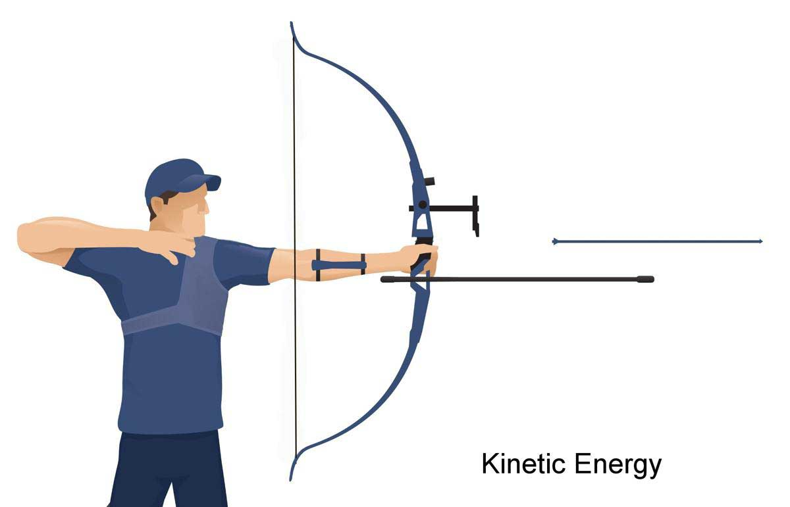
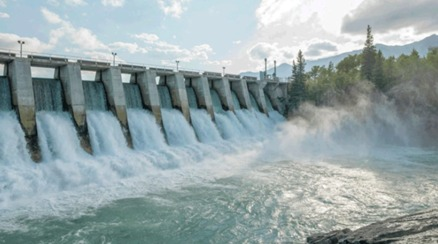
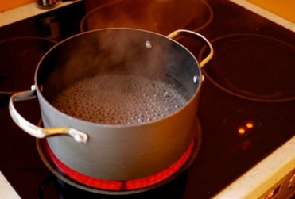
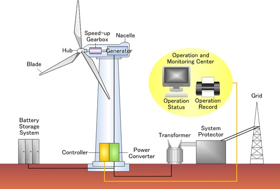
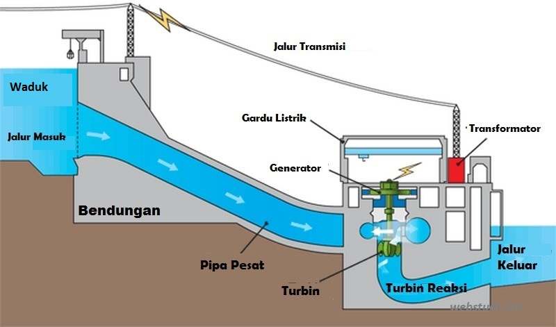
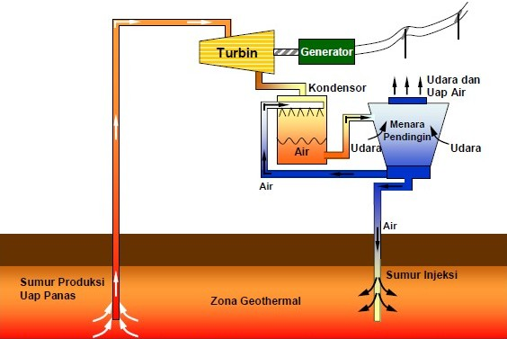
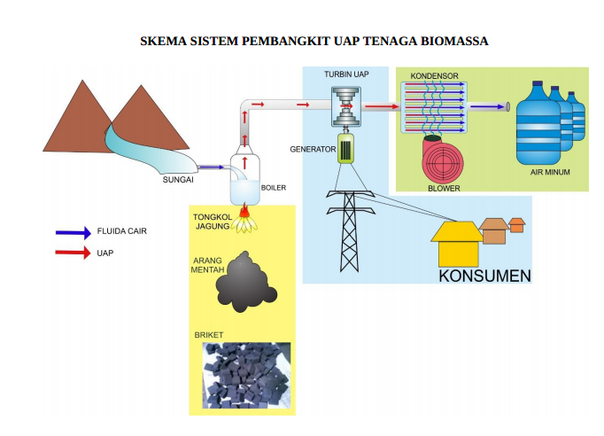

Energi Terbarukan
Memahami konsep energi, daya, efisiensi, konversi energi, serta pemanfaatan berbagai sumber energi terbarukan dalam kehidupan sehari-hari.
01
Energi Baru Terbarukan
Energi Baru Terbarukan (EBT)
Energi Baru Terbarukan (EBT) merupakan energi alternatif terbaik untuk mengantisipasi ketersediaan energi fosil yang semakin menipis. Energi terbarukan merupakan energi yang berasal dari sumber energi terbarukan. Sumber energi terbarukan ialah sumber energi yang dihasilkan dari sumber daya energi yang berkelanjutan, jika dikelola dengan baik, antara lain panas bumi, angin, bioenergy, sinar matahari, aliran dan terjunan air, serta gerakan dan perbedaan suhu lapisan laut. Energi Baru Terbarukan menjadi salah satu pilihan pasokan energi sebab rendah emisi dalam memengaruhi kerusakan lingkungan, juga memastikan perlindungan energi di masa yang akan datang. EBT berupaya untuk mengurangi pemakaian energi fosil dan mewujudkan energi yang bersih atau ramah lingkungan.
02
Energi dan Bentuk Energi
Pengertian Energi
Energi adalah kemampuan untuk melakukan usaha atau menyebabkan terjadinya perubahan pada suatu benda maupun sistem. Perubahan tersebut dapat berupa benda yang bergerak, berubah bentuk, berubah suhu, menghasilkan cahaya, atau menghasilkan bunyi. Dalam fisika, energi termasuk besaran yang memiliki satuan Joule (J) menurut SI. Energi juga sering dinyatakan dalam satuan lain, seperti kalori (cal) untuk energi panas dan kilowatt-hour (kWh) untuk energi listrik yang digunakan dalam kehidupan sehari-hari. Energi tidak dapat diciptakan maupun dimusnahkan, hanya bisa diubah dari satu bentuk ke bentuk lainnya.
Di alam, terdapat berbagai jenis bentuk energi. Berikut adalah bentuk-bentuk energi.
1. Energi Kinetik
Energi kinetik adalah energi yang dimiliki oleh benda karena bergerak. Semakin besar massa benda dan semakin tinggi kecepatannya, maka semakin besar pula energi kinetiknya.

Dalam sudut pandang energi terbarukan, energi kinetik ini dapat dimanfaatkan dalam menghasilkan listrik dengan memanfaatkan energi kinetik yang dapat memutar dinamo sehingga menghasilkan listrik. Pemanfaatan energi terbarukan dengan memanfaatkan kinetik atau benda bergerak memiliki kelebihan berupa daya yang tidak terbatas selagi sumber gerak terus bergerak. Energi kinetik merupakan energi alternatif yang ramah lingkungan. Semakin cepat putaran maka akan semakin besar pula daya yang didapatkan. Secara matematis, dinyatakan dengan persamaan:
Persamaan Energi Kinetik
m = massa benda (kg)
v = kecepatan benda (m/s)
2. Energi Potensial Gravitasi
Energi potensial gravitasi dimiliki oleh benda karena posisinya terhadap permukaan bumi. Benda pada ketinggian tertentu di atas permukaan bumi memiliki energi yang disimpan dalam bentuk energi potensial gravitasi. Energi ini siap diubah atau ditransfer menjadi energi lain. Besar energi potensial ditentukan oleh posisi ketinggian benda terhadap permukaan bumi, massa benda, dan percepatan gravitasi bumi. Semakin tinggi letak suatu benda di atas permukaan bumi, maka semakin besar energi potensial gravitasinya.

Contoh dari energi potensial gravitasi adalah air yang ditampung di bendungan. Air tersebut memiliki energi potensial yang besar karena berada di tempat yang lebih tinggi. Saat dialirkan ke bawah, energi potensial berubah menjadi energi gerak untuk memutar turbin pada PLTA. Besaran pada energi potensial adalah:
Persamaan Energi Potensial Gravitasi
m = massa benda (kg)
g = percepatan gravitasi
h = posisi benda pada ketinggian tertentu (m)
3. Energi Mekanik
Energi mekanik adalah total penjumlahan energi potensial dan energi kinetik yang dimiliki oleh suatu sistem. Misalnya pada benda yang bergerak jatuh bebas memiliki dua energi dalam satu benda sehingga energi mekanik merupakan penjumlahan dari energi kinetik karena geraknya dan energi potensial karena kedudukannya.
Energi mekanik banyak dimanfaatkan dalam sistem pembangkit listrik. Contohnya pada turbin air dan turbin angin, putaran turbin merupakan bentuk energi mekanik yang kemudian diubah menjadi energi listrik oleh generator. Persamaannya adalah:
Persamaan Energi Mekanik
EK = energi kinetik (J)
EP = energi potensial (J)
4. Energi Panas/Kalor
Jumlah energi potensial dan energi kinetik yang dipindahkan oleh partikel dan atom penyusun zat disebut panas/tenaga nuklir. Energi ini akan berpindah dari satu benda ke benda berikutnya karena perbedaan suhu. Misalnya kamu memanaskan air dalam wajan menggunakan pemanas api, sementara pemanasan dimulai, komponen intensitas panas api perlahan-lahan meningkat suhunya mengingat fakta bahwa energi panas dari api dan air meningkat sesuai dengan intensitas panas yang disalurkan api ke wajan dan air.

5. Energi Listrik
Energi listrik merupakan hasil yang didapatkan dari transfer energi pembangkit listrik dan juga dari dalam baterai. Energi listrik merupakan bentuk energi yang paling umum digunakan di rumah dan industri karena kemudahan transmisi dan transfer ke bentuk lain.
Besarnya energi listrik yang digunakan pada peralatan listrik sebanding dengan hasil kali antara tegangan listrik (V), arus listrik (I), dan waktu (t). Jika ditulis dalam persamaan matematis:
Persamaan Energi Listrik
Hubungan dengan Hukum Ohm
V = beda potensial atau tegangan listrik (volt)
I = kuat arus listrik (A)
R = hambatan listrik (ohm)
t = selang waktu (s)
03
Konversi Energi
Konsep Konversi Energi
Energi memiliki sifat kekal, yaitu tidak dapat diciptakan maupun dimusnahkan, tetapi hanya dapat diubah dari satu bentuk energi ke bentuk energi lainnya. Proses perubahan bentuk energi tersebut disebut konversi energi atau transformasi energi. Prinsip ini didasarkan pada Hukum Kekekalan Energi, yang menyatakan bahwa jumlah energi sebelum dan sesudah terjadi perubahan tetap sama, meskipun bentuk energinya berbeda. Secara sederhana, hukum kekekalan energi dapat dituliskan sebagai berikut.
Hukum Kekekalan Energi
Konversi energi terjadi hampir pada semua aktivitas sehari-hari, baik secara alami maupun melalui bantuan teknologi. Misalnya, energi listrik pada lampu diubah menjadi energi cahaya dan sebagian menjadi energi panas, sedangkan pada kipas angin energi listrik diubah menjadi energi gerak. Adapun contoh konversi energi yang disajikan dalam bentuk tabel berikut.
Konversi energi juga menjadi prinsip utama dalam pembangkitan energi listrik. Setiap jenis pembangkit memanfaatkan sumber energi yang berbeda, tetapi seluruhnya bekerja dengan mengubah energi dari satu bentuk menjadi energi listrik yang dapat dimanfaatkan oleh masyarakat.
| Jenis Pembangkit | Perubahan Energi |
|---|---|
| PLTS | Energi cahaya matahari → energi listrik |
| PLTB | Energi gerak angin → energi mekanik → energi listrik |
| PLTA | Energi potensial air → energi kinetik → energi mekanik → energi listrik |
| PLTP | Energi panas bumi → energi mekanik → energi listrik |
| PLT Biomassa | Energi kimia biomassa → energi panas → energi mekanik → energi listrik |
Dalam proses konversi energi, tidak semua energi masukan dapat diubah menjadi energi yang berguna. Sebagian energi akan hilang ke lingkungan dalam bentuk panas, bunyi, atau bentuk energi lainnya. Semakin besar energi yang berhasil dimanfaatkan dibandingkan energi masukan, maka semakin tinggi efisiensi suatu sistem.
04
Daya dan Efisiensi
Usaha
Usaha dapat dihasilkan oleh gaya yang konstan, dan juga gaya yang tidak konstan. Usaha adalah energi yang dipindahkan atau disalurkan oleh suatu gaya sehingga menyebabkan benda mengalami perpindahan. Berikut adalah persamaan matematisnya:
Persamaan Usaha
F = Gaya (N)
s = perpindahan (m)
Daya
Seberapa lama waktu yang digunakan untuk melakukan usaha dinyatakan dengan besaran daya. Konsep daya digunakan untuk menunjukkan kemampuan suatu alat dalam menghasilkan atau mengubah energi. Semakin besar daya suatu alat, maka semakin besar energi yang dapat diubah tiap detiknya. Berikut adalah persamaan matematisnya:
Persamaan Daya
W = usaha (J)
t = waktu (s)
Faktor Penentu Besarnya Daya pada Pembangkit
PLTS — Tenaga Surya
- Intensitas cahaya: makin terik sinar matahari, daya makin tinggi.
- Luas panel: ukuran total area penyerapan sinar matahari.
- Efisiensi panel: kemampuan material sel mengubah cahaya menjadi listrik.
PLTB — Tenaga Angin
- Kecepatan angin: berpengaruh sangat dominan terhadap daya.
- Luas sapuan baling-baling: area lingkaran putaran kincir.
- Efisiensi sistem: efektivitas aerodinamis turbin dan generator.
PLTA — Tenaga Air
- Debit air (Q): volume air yang mengalir per satuan waktu.
- Tinggi jatuh air (h): ketinggian air terjun atau bendungan.
- Efisiensi turbin: performa sudu turbin dan generator.
Dalam kehidupan sehari-hari, energi tidak selalu dinyatakan dalam satuan SI, Joule. Satuan energi, kaitannya dengan daya, biasa dinyatakan dalam kilowatt.jam (kWh). Dalam kehidupan sehari-hari biasanya satuan kWh, digunakan untuk menghitung energi listrik yang digunakan beserta biaya yang harus dikeluarkan. Berikut ini contoh sederhana kegunaan perhitungannya dalam kehidupan sehari-hari.
Hubungan Daya Masuk dan Daya Keluaran pada Pembangkit
Setiap pembangkit memanfaatkan energi yang tersedia dari sumber energi untuk menghasilkan energi listrik. Daya yang tersedia dari sumber energi disebut daya masuk (Pin), sedangkan daya listrik yang dihasilkan setelah proses konversi disebut daya keluaran (Pout). Besarnya daya keluaran dipengaruhi oleh kondisi sumber energi dan efisiensi sistem.
PLTS — Tenaga Surya
Pout = daya keluaran (W)
I = intensitas radiasi matahari (W/m²)
A = luas panel surya (m²)
η = efisiensi sistem (%)
PLTB — Tenaga Angin
Pout = daya keluaran (W)
ρ = massa jenis udara (kg/m³)
A = luas sapuan turbin (m²)
v = kecepatan angin (m/s)
η = efisiensi sistem (%)
PLTA — Tenaga Air
Pout = daya keluaran (W)
ρ = massa jenis air (kg/m³)
Q = debit air (m³/s)
g = percepatan gravitasi (m/s²)
h = tinggi jatuh air (m)
η = efisiensi sistem (%)
Energi Listrik Berdasarkan Daya dan Waktu
Energi listrik juga dapat dipengaruhi oleh besar daya dan lama penggunaan. Persamaan matematisnya:
Persamaan Energi Listrik
P = daya (W)
t = waktu penggunaan (s), (hour)
Konversi Satuan Energi
Contoh Perhitungan Energi Sederhana
Sebuah lampu memiliki daya 20 W dan digunakan selama 5 jam. Energi listrik yang digunakan dapat dihitung menggunakan hubungan antara daya dan waktu.
$$E = 20 \times 5$$
$$E = 100 \text{ Wh}$$
Jadi, lampu tersebut menggunakan energi sebesar 100 Wh atau 0,1 kWh selama 5 jam.
Efisiensi
Seberapa efektif energi yang dapat dimanfaatkan dinyatakan dalam persentase perbandingan antara energi yang dihasilkan (dapat dimanfaatkan) dengan energi yang diterima atau biasa disebut dengan istilah efisiensi. Secara sederhana, efisiensi dinyatakan dalam persamaan berikut ini.
Persamaan Efisiensi Energi
Edihasilkan = energi yang dihasilkan (J)
Editerima = energi yang diterima (J)
05
Sumber-Sumber Energi
Berdasarkan Asalnya
1. Energi Primer
Energi primer adalah energi yang asalnya dari energi di alam tanpa mengalami perubahan energi. Adapun diantaranya berupa matahari, air, angin, batubara, minyak bumi dan nuklir.
2. Energi Sekunder
Energi sekunder merupakan energi yang asalnya dari energi primer yang telah mengalami perubahan energi atau proses tertentu. Beberapa contohnya adalah energi listrik dan gas.
Berdasarkan Ketersediaannya
1. Energi Tak Terbarukan
Energi tak terbarukan merupakan energi yang dihasilkan oleh sumber energi yang bersifat terbatas aksesibilitasnya, tidak ada siklus pemulihan di alam, apabila habis maka tidak dapat dibangun kembali. Contoh dari energi tak terbarukan adalah energi fosil seperti minyak bumi, batu bara, dan gas bumi.
2. Energi Terbarukan
Energi tebarukan merupakan sumber energi yang siklus pengembangannya terjadi secara alami di alam dan aksesibilitasnya dapat diisi ulang secara terus- menerus dan tidak pernah habis. Sumber energi terbarukan terdiri dari 6 jenis yaitu matahari, air, angin, panas bumi, energi biomassa, energi gelombang dll (Silitonga & Ibrahim, 2020).
Matahari adalah bintang dan juga sumber energi utama bagi kehidupan di planet ini. Sumber energi bertenaga matahari berasal dari reaksi fusi yang terjadi karena tegangan dan suhu tinggi yang mengubah inti hidrogen menjadi helium dan menghasilkan energi yang sangat besar, sehingga suhu pusat matahari sampai juta kelvin. Transformasi energi sinar matahari menjadi energi lain dibagi menjadi 3 siklus terpisah, yaitu proses heliokimia, heliotermal, dan helioelektrik. Siklus heliokimia terjadi pada fotosintesis dan merupakan sumber dari semua energi fosil. Siklus heliotermal adalah asimilasi energi bertenaga matahari dan selanjutnya berubah menjadi tenaga termal. Sementara itu, siklus helioelektrik adalah memproduksi listrik.
Contoh dari proses helioelectrical adalah teknologi fotovoltaik (PV) yaitu inovasi pembangkit listrik yang mengubah cahaya (foto) menjadi daya (volt), peristiwa ini disebut efek fotolistrik (photovoltaic affect). Adapun cara kerja dari Pembangkit Listrik Tenaga Surya (PLTS) yaitu:
- Energi berbasis sinar matahari diubah menjadi energi listrik dan menghasilkan aliran listrik DC oleh PLTS.
- Aliran DC menjadi daya AC diubah oleh inverter.
- Arus AC masuk ke jaringan listrik melalui AC breaker panel di dalam bangunan.
- Energi listrik siap digunakan.
 Gambar 4. Cara Kerja PLTS
Gambar 4. Cara Kerja PLTS
Pemanfaatan energi fosil dalam penyediaan energi listrik sangatlah besar dan akan berdampak buruk terhadap lingkungan salah satunya adalah global warming (pemanasan global). Potensi angin yang cukup menyebabkan beberapa negara salah satunya Indonesia untuk membuat energi alternatif yaitu pembangkit listrik tenaga bayu (PLTB).
Pembangkit Listrik Tenaga Angin (PLTB) merupakan pembangkit listrik yang mengubah energi angin menjadi energi listrik. Energi angin memutar turbin angin (kincir angin) yang membuat rotor generator berputar yang selanjutnya menyalurkan energi listrik. Frekuensi energi yang dihasilkan, dipengaruhi oleh beberapa faktor seperti rotor (kincir), kecepatan angin dan jenis generator. Adapun cara kerja dari Pembangkit Listrik Tenaga Bayu (PLTB) yaitu:
- Angin menggerakkan sudu-sudu kincir angin yang mengkonversi energi angin menjadi energi gerak (mekanik).
- Kincir angin menggerakkan poros dan selanjutnya gerakan poros ditransmisikan ke gearbox supaya besar putarannya.
- Putaran gearbox ditransmisikan ke generator.
- Generator mengubah putaran menjadi listrik, ada listriknya langsung digunakan dan ada juga sebagian disimpan pada baterai untuk digunakan dilain waktu.

Gambar 5. Cara Kerja PLTBEnergi air atau Pembangkit Listrik Tenaga Air (PLTA) adalah pembangkit listrik yang memanfaatkan tenaga air sebagai penggerak utamanya, misalnya sistem pengairan, sungai atau air terjun dengan menggunakan ketinggian air terjun dan debit yang dikeluarkan.
Pada dasarnya pembangkit listrik tenaga air menggunakan kemampuan energi jatuhnya air yang menggerakkan turbin menjadi energi listrik. Perbedaan pembangkit listrik tenaga air (PLTA) dan pembangkit listrik tenaga mikrohidro (PLTMH) terletak pada seberapa besar pembangkit listriknya. PLTA dengan ukuran dibawah 200 KW disebut PLTMH. Penggunaan PLTMH karena kuantitasnya kecil maka ini lebih cocok digunakan di pedesaan atau tempat terpencil. Adapun cara kerja dari Pembangkit Listrik Tenaga Air (PLTA) diantaranya:
- Energi potensial dari aliran air dimanfaatkan untuk menggerakkan turbin.
- Turbin berputar dan menghasilkan energi mekanik.
- Energi mekanik dari putaran turbin diputar untuk memutar generator.
- Dari generator tersebut dihasilkan energi listrik.

Gambar 6. Cara Kerja PLTAPanas bumi merupakan salah satu jenis energi panas yang diciptakan dan disimpan di dalam bumi. Energi panas bumi berasal dari energi yang timbul akibat pembentukan planet (20%) dan pembusukan radioaktif mineral (80%). Energi panas bumi dihasilkan dari bebatuan panas yang terbentuk beberapa kilometer di bawah permukaan bumi yang menghangatkan air di sekitarnya sehingga menciptakan sumber uap panas. Adapun cara kerja dari pembangkit listrik tenaga panas bumi (PLTP) yaitu:
- Mengebor sumur produksi di kedalaman 1.500–2.500 m sesuai dengan anjuran ESDM.
- Fluida thermal yang ada di dalam sumur produksi dialirkan untuk menggerakkan turbin.
- Generator bergerak menghasilkan listrik.
- Fluida thermal dialirkan kembali ke dalam bumi untuk menjaga keseimbangan fluida dan panas sehingga panas bumi terus berkelanjutan.

Gambar 7. Cara Kerja PLTPBiomassa adalah bahan yang dapat diperoleh dari tumbuhan baik secara langsung maupun tidak langsung (produk diperoleh melalui limbah peternakan dan industri makanan) selanjutnya digunakan sebagai energi atau bahan dalam yang banyak. Contohnya tanaman tebu merupakan energi alternatif karena menghasilkan ampas tebu dan daun tebu kering. Bentuk biomassa tebu mengkonversi energi matahari menjadi energi kimia.
Jenis pembangkit energi listrik yang dimanfaatkan untuk energi biomassa adalah pembangkit listrik tenaga biomassa (PLTBm). Adapun cara kerja pembangkit listrik tenaga biomassa (PLTBm):
- Membakar bahan alami biomassa dalam ruang pembakaran untuk mencairkan cairan fluida dalam boiler dari sungai.
- Memanaskan fluida cair di boiler.
- Fluida yang telah dicairkan berubah jadi uap panas sehingga mampu menggerakkan turbin uap dan generator.
- Generator menghasilkan energi listrik.

Gambar 8. Cara Kerja PLTBmMateri Energi Terbarukan • E-Lit Lab
← Kembali ke Beranda